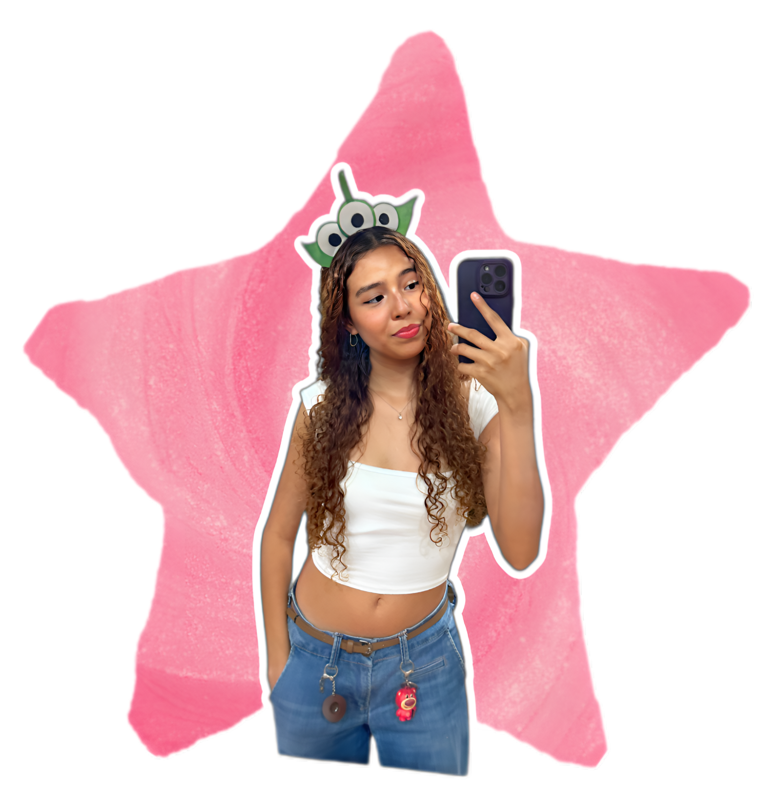

Sobre mí
Mi curiosidad por los detalles y la comunicación visual.

Siempre he sido de las personas que se quedan viendo los detalles. Los colores de una película, un cartel en la calle, una portada de un álbum o una publicación mientras hago scroll. Siempre termino preguntándome por qué algunas imágenes se quedan en la memoria y otras pasan desapercibidas. Esa curiosidad fue la que me llevó a estudiar diseño gráfico.
Disfruto especialmente el diseño editorial y publicitario. Me gusta crear flyers, piezas para redes sociales y campañas porque es donde más disfruto explorar ideas y comunicar a través del diseño. Gran parte de mi inspiración viene del cine, la música y la fotografía. Son intereses que siempre terminan influyendo en mi proceso creativo y en la forma en la que observo el diseño.
Este portafolio reúne algunos de los proyectos que he desarrollado durante mi formación y refleja una parte de mi proceso de aprendizaje como diseñadora.
Educación
Técnico en Auxiliar de Diseño Gráfico
Politécnico Superior de Occidente · 2025–2027
Bachiller Técnico con especialidad en Informática en Sistemas
Centro Educativo Comunitario CECOT · 2024
Habilidades
Habilidades blandas
- Creatividad
- Comunicación
- Adaptabilidad
- Empatía
- Organización
Programas
- Adobe Photoshop
- Adobe Illustrator
- Adobe Lightroom